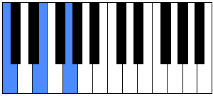

¿Qué son los acordes?
Los acordes en el piano son un conjunto de notas que se tocan al mismo tiempo y que forman una unidad armónica. En general, un acorde está formado por tres o más notas, aunque en la práctica no es necesario tocarlas todas al unísono.
Importancia de los acordes en la música
Los acordes son importantes en la música porque:
Definen el tono de una canción: Los acordes son la estructura armónica básica de la música moderna y establecen la tonalidad de una composición.
Acompañan las melodías: Los acordes proporcionan el soporte armónico y la coloración que acompañan a las melodías.
Crean un estado de ánimo: Los acordes contribuyen al sonido y el estado de ánimo generales de una composición musical. Por ejemplo, una progresión de acordes mayores puede transmitir sentimientos de felicidad, mientras que una progresión menor puede transmitir tristeza.
Son la base para crear melodías: Una progresión de acordes sólida es la base ideal para la construcción de melodías.
Son fundamentales para aprender a tocar un instrumento: Los acordes son la unidad básica de la armonía musical y son fundamentales para aprender a tocar cualquier instrumento.
Tipos de acordes
Acorde mayor y menor: Los acordes más básicos, formados por la tónica, la tercera y la quinta. La diferencia entre ambos es que el acorde mayor tiene una tercera mayor, mientras que el menor tiene una tercera menor.
Acorde aumentado: Se forma por una tercera mayor y una quinta aumentada.
Acorde disminuido: Se forma por una tercera menor y una quinta disminuida.
Acorde de séptima de sensible: Se forma sobre la sensible en el modo mayor.
Acorde de séptima disminuida: Se forma sobre la sensible del modo menor, aunque también puede usarse en el modo mayor.
Cuatríada: Acorde formado por cuatro notas distintas. Se forma añadiendo una tercera a un acorde tríada.
Quintíada: Acorde formado añadiendo otra tercera a un acorde cuatríada.